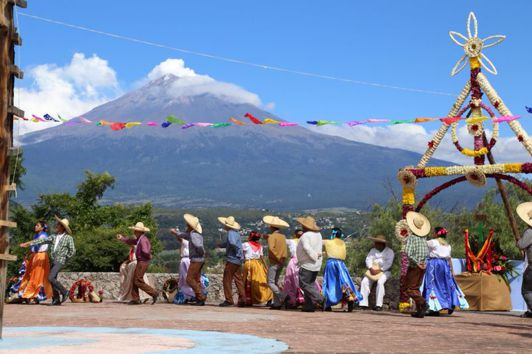

Heroica Atlixco, también conocido como «Atlixco de las flores», es un municipio que se localiza al suroeste de la Ciudad de Puebla. Recibió su título de Heroica debido a la Batalla del 4 de mayo de 1862 que precedería a la Batalla de Puebla del 5 de mayo de 1862.
Es conocido por su buen clima y la gran actividad florística, comercial y turística que le valieron haber sido llamada Atlixco de las Flores y Granero de la Nueva España, durante la época colonial.
El último domingo de septiembre, en la explanada del cerro de San Miguel, Atlixco se convierte en la sede de un festival en el que se reúnen los representantes de las once regiones culturales del estado de Puebla, festival que es llamado «Huey Atlixcáyotl» o Fiesta Grande de Atlixco y que es patrimonio cultural del estado de Puebla.


Se ubica a 30 km de la ciudad de Puebla, capital del Estado y cuenta con dos importantes vías de acceso: la Carretera Federal 190 y la Autopista Vía Atlixcáyotl.
El municipio abarca un área de 293.01 km2 y se encuentra a una altitud promedio de 1840 msnm. Colinda al norte con el municipio de Tianguismanalco, al este con Santa Isabel Cholula, Ocoyucan, San Diego la Mesa Tochimiltzingo y la ciudad de Puebla; al sur con Huaquechula y Tepeojuma, y al oeste con Atzitzihuacán y Tochimilco.
De la capital poblana a Atlixco la distancia es de 30 km, que se recorren en 25 minutos.
En automóvil desde Puebla, tomar la vía Atlixcayotl pasando periférico está la caseta para la pista Puebla-Atlixco. Por la Federal tomar Blvd Atlixco, pasar Periférico. Blvd Atlixco se convierte en la Federal, pasar Tlaxcalancingo, Chipilo y seguir hasta Atlixco.

Construcción del siglo XVII-XIX que finalmente se inauguró el 1 de febrero de 1908. En su fachada tiene el escudo de armas de la Villa de Carrión fundada en 1579. El edificio fue remodelado con motivo del 50 aniversario de la Revolución Mexicana, inaugurado por el Lic. Adolfo López Mateos presidente de la República Mexicana.

En el interior de Palacio Municipal así como en la planta baja del exterior (Ex Biblioteca), disfruta los murales de la Fundación de Atlixco, la Historia de la Educación en México o los Héroes de la Independencia y Reforma con diferentes estilos pictóricos, así como la vida obrera y textil que marco una época de grandeza en Atlixco, hasta los acontecimientos más sobresalientes en el municipio como lo es la Villa Iluminada.

La gastronomía de Atlixco es muy variada puedes encontrar platillos diferentes, con un sabor unico e incompareble. no te la puedes perder, ven y disfrutala... hay muvhas platillos..
Un platillo por el que después de probarlo querrás volver Atlixco, la tradicional cecina de Atlixco, elaborado por cecineros del municipio de manera artesanal este platillo es básico dentro de la cocina atlixquense, acompañado de sus guarniciones de queso, aguacate y nopales.

Mejores no encontraras en Atlixco rellenos de cualquier guisado simple, combinado o no con una dosis de arroz a la mexicana; los hay de chicharrón prensado, tinga, huevos duros, nopales con huevo, longaniza con papas, chicharrón guisado en salsa verde o roja, bistec con nopales, costilla de puerco en adobo, entre otros.
Los rollitos que se forman uno tras otro para cubrirse de una delicada salsa. Rellenas de pollo, bañadas en salsa verde, roja o mole que se acompañan de lechuga, aguacate, crema, queso, rábano y cebolla, listos para degustarse calientitos y bien bañaditos.
El gusto por el atole recibe una recompensa con este de cacahuate, que aporta algo diferente. Ideal para comer unos tamales, e incluso un pan de agua, hojaldra o cuernitos. Claro es para una reunión familiar o fiesta, elaborado con masa, leche y cacahuate

Postre tradicional y originario de Atlixco, está elaborado con harina de arroz, leche, yemas de huevo y piñón, donde el resultado es una crema de arroz que es adornada con ajonjolí y pasas, se elabora para la fiesta de Corpus y Semana Santa.
No te puedes ir de Atlixco sin haber probado las nieves y los sorbetes de diferentes sabores y sentarte en el Zócalo de la ciudad y disfrutarlo.

Es un majestuoso desfile de 5 km de largo en el que más de 15 carros alegóricos, comparsas y bandas locales recorren las calles principales de la Ciudad.
En la ciudad de Atlixco se realiza una de las procesiones de Viernes Santo más impactantes de la región, donde varios hombres conocidos como los Engrillados, recorren las calles encadenados con más de 50 kilos a cuestas, portando coronas de espinas, así como púas o puntas que se colocan en distintas partes del cuerpo, principalmente en hombros y pies, en cumplimiento de alguna promesa o agradecimiento a Dios por un favor recibido. Se puede apreciar majestuosos tapetes de aserrín, elaborados por los propios lugareños.
En el mes de julio en el Recinto Ferial de Atlixco se realiza La Expo Flores y Plantas, donde productores de la región con toda una gama de Flores y Plantas exhiben su producto que le ha dado fama a los atlixquenses a nivel nacional en cuanto a la producción de Flor.
En la última semana de julio primera de agosto se celebra uno de los platillos típicos de nuestra región, La Cecina, en un ambiente familiar amenizado con eventos artísticos, todo esto en el Recinto Ferial del Municipio.
“La fiesta chica de la gran familia Atlixquense”, tiene lugar en el Cerro de San Miguel dos fines de semana antes del Huey Atlixcáyotl; es decir, el segundo domingo del mes de Septiembre. En ella se reúnen danzantes de las tres regiones que convergen La Región del Valle, La Región de La Tierra Caliente y la Región de los Volcanes (también conocida como la región de la Sierra Nevada).
La cabalgata se celebra el día 14 con más de 300 jinetes que recorren las principales avenidas de la ciudad. La cabalgata culmina en una verbena popular en el zócalo de la ciudad. Además, del espectáculo de pirotecnia el día 15 después del tradicional grito de independencia.
“La Gran Fiesta de Atlixco”. Con una tradición de más de 48 años de música, danza y artesanías de las 11 regiones etnográficas del Estado de Puebla. Fue declarado Patrimonio Cultural del estado de Puebla el 29 de Julio de 1996. Hoy es la gran fiesta de los poblanos. Se celebra el último domingo de Septiembre en el Cerro de San Miguel.
El 2 de Noviembre la Ciudad de Atlixco se viste de calaveras para recorrer las principales calles en un festivo y colorido desfile que busca preservar nuestras tradiciones populares.¡VEN A DISFRUTAR ESTA NOCHE DE CALAVERAS

A partir del 25 de Noviembre los mejores productores de la región exponen y venden una variedad enorme de plantas de Nochebuena a precios competitivos en mayoreo y menudeo concentrados en el Recinto Ferial de Atlixco.

Más de 45 días Atlixco se ilumina con espectaculares figuras que adornarán calles y avenidas en un recorrido que te dejara maravillado, además podrás disfrutar de eventos culturales y artísticos que harán de tu estancia algo mágico.

Se celebra la Batalla de Atlixco tuvo lugar el 4 de mayo de 1862 en las inmediaciones de la Hacienda de las Traperas en Atlixco en el estado de Puebla.
“La fiesta chica de la gran familia Atlixquense”, tiene lugar en el Cerro de San Miguel dos fines de semana antes del Huey Atlixcáyotl; es decir, el segundo domingo del mes de Septiembre.
Se celebra el último domingo de Septiembre en el Cerro de San Miguel. “La Gran Fiesta de Atlixco”. Con una tradición de más de 48 años de música, danza y artesanías de las 11 regiones etnográficas del Estado de Puebla. Fue declarado Patrimonio Cultural del estado de Puebla el 29 de Julio de 1996.
Atlixco esta lleno de lugares para visitar, con extraordinariasbtradiciones.. mencionaremos unas, pero hay muchas.
En el interior de Palacio Municipal así como en la planta baja del exterior (Ex Biblioteca), disfruta los murales de la Fundación de Atlixco, la Historia de la Educación en México o los Héroes de la Independencia y Reforma con diferentes estilos pictóricos, así como la vida obrera y textil que marco una época de grandeza en Atlixco.
Sobre la Avenida Hidalgo se encuentra esta emblemática calle denominada la Calle de las Flores, donde podrás apreciar sus renovadas fachadas adornadas con flores del municipio. Durante el recorrido podrás apreciar las casonas que fueron reconstruidas.

Si tienes ánimo aventurero te invitamos a subir al Cerro de San Miguel para que eches un vistazo de la Ciudad desde sus miradores y si todavía te quedan un poco de fuerzas, que subas la escalinata hasta la Ermita dedicada al Arcángel San Miguel; que cuenta la historia, encerró al diablito que hacía de las suyas en los solares dentro del pozo que se encuentra ahí. Su fiesta se celebra el 29 de Septiembre.

Uno de los muchos atractivos turísticos que ofrece el municipio de Atlixco son los viveros de la colonia cabrera, mismos que se han encargado de preservar el nombre de “Atlixco de las Flores” esto por la producción de más de 120 mil plantas que se tiene.
Son más de 100 los viveros que se encuentran en toda esta colonia que gracias al turista, así como a los amantes de las flores día con día se va posicionando en el mercado como lugar favorito para llevarse un recuerdo viviente de este Pueblo Mágico.
Huey Atlixcáyotl es el nombre de un festival cultural que se realiza en el cerro de San Miguel, en la parte conocida como Netotiloyan(Cerro de la danza), en el municipio de Atlixco, Puebla el último domingo de septiembre de cada año. El nombre de este festejo que se celebra en torno a la fiesta de San Miguel Arcángel es de origen náhuatl y quiere decir Gran Fiesta de Atlixco. Pero traducido por las raíces de la lengua náhuatl el sufijo "Yotl" más Atlixco se traduce como "Atlixquedad".
El Huey Atlixcáyotl congrega las delegaciones de las once regiones etnogeográficas del estado de Puebla. El primer Huey Atlixcayotl se celebró en 1965. Se supone que se trata de una festividad en honor del dios Quetzalcóatl, que se identifica con el culto al santo patrón del Valle de Atlixco. En 1996 fue declarado Patrimonio Cultural del Estado de Puebla por el gobierno estatal.


 1
1


 4
4 6
6 7
7 8
8 9
9